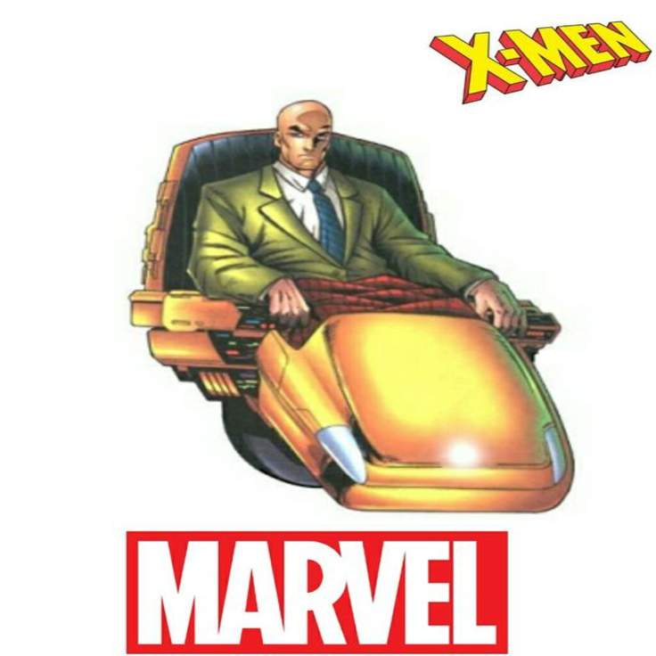

 Charles Xavier, ou Professor X, é o fundador dos X-Men e um dos mutantes mais poderosos do universo Marvel. Ele nasceu com habilidades telepáticas, capazes de ler e controlar mentes. Desde jovem, Charles se dedicou à ideia de coexistência pacífica entre mutantes e humanos. Após sofrer um acidente que o deixou paraplégico, Charles fundou a Escola para Jovens Superdotados, onde treinou mutantes para usar seus poderes de forma responsável. Ele criou os X-Men para proteger os mutantes e lutar contra a discriminação. Seus maiores desafios envolvem o confronto com seu amigo e rival Magneto, que acredita que os mutantes devem dominar os humanos, e a luta constante para manter a paz em um mundo que teme e odeia os mutantes. Xavier é visto como um mentor sábio e pacifista, dedicado à construção de um futuro onde mutantes e humanos possam viver juntos em harmonia.